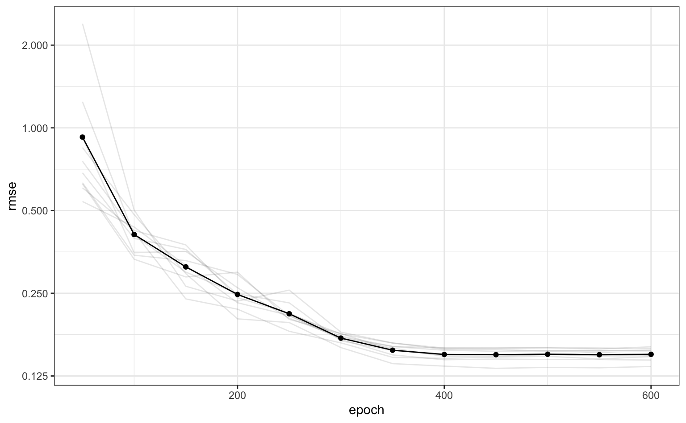

Here we demonstrate a simple grid search to optimize a tuning parameter of a keras neural network.
The Ames housing data is used to demonstrate. There are a number of predictors for these data but, for simplicity, we’ll see how far we can get by just using the geocodes for the properties as predictors of price. The outcome will be modeled on the log10 scale.
To be consistent with other analyses of these data, a training/test split is made. However, this article focuses on the training set.
Normally, feature preprocessing should be estimated within the resampling process to get generalizable estimates of performance. Here, the two predictors are simply centered and scaled beforehand to avoid complexity in this analysis. However, this is generally a bad idea and the article on recipes describes a proper methodology for preprocessing the data.
library(rsample)
set.seed(4595)
data_split <- initial_split(ames, strata = "Sale_Price")
ames_train <- training(data_split) %>%
mutate(Sale_Price = log10(Sale_Price),
Longitude = scale(Longitude, center = TRUE),
Latitude = scale(Latitude, center = TRUE))The resample the model, simple 10-fold cross-validation is done such that the splits use the outcome as a stratification variable. On average, there should be 218 properties in the assessment set and this should be enough to obtain good estimates of the model RMSE.
set.seed(2453)
cv_splits <- vfold_cv(ames_train, v = 10, strata = "Sale_Price")A single layer feed-forward neural network with 10 hidden units will be used to model these data. There are a great many tuning parameters for these models including those for structural aspects (e.g. number of hidden units, activation type, number of layers), the optimization (momentum, dropout rate, etc.), and so on. For simplicity, this article will only optimize the number of training epochs (i.e. iterations); basically this is testing for early stopping.
A function is needed to compute the model on the analysis set, predict the assessment set, and compute the holdout root mean squared error (in log10 units). The function below constructs the model sequentially and takes the number of epochs as a parameter. The argument split will be used to pass a single element of cv_splits$splits. This object will contain the two splits of the data for a single resample. The ellipses (...) will be used to pass arbitrary arguments to keras::fit.
In this function, the seed is set. A few of the model components, such as initializer_glorot_uniform and layer_dropout, use random numbers and their specific seeds are set from the session’s seed. This helps with reproducibility.
library(keras)
library(yardstick)
library(purrr)
mlp_rmse <- function(epoch, split, ...) {
# Set the seed to get reproducible starting values and dropouts
set.seed(4109)
# Clearing the session after the computations have finished
# clears memory used by the last trial in preparation for
# the next iteration.
on.exit(keras::backend()$clear_session())
# Define a single layer MLP with dropout and ReLUs
model <- keras_model_sequential()
model %>%
layer_dense(
units = 10,
activation = 'relu',
input_shape = 2,
kernel_initializer = initializer_glorot_uniform()
) %>%
layer_dropout(rate = 0.4) %>%
layer_dense(units = 1, activation = "linear")
model %>% compile(
loss = 'mean_squared_error',
optimizer = optimizer_rmsprop(),
metrics = 'mean_squared_error'
)
# The data used for modeling (aka the "analysis" set)
geocode <- analysis(split) %>%
select(-Sale_Price) %>%
as.matrix()
model %>% fit(
x = geocode,
y = analysis(split)[["Sale_Price"]],
epochs = epoch,
...
)
# Now obtain the holdout set for prediction
holdout <- assessment(split)
pred_geocode <- holdout %>%
select(-Sale_Price) %>%
as.matrix()
holdout$predicted <- predict(model, pred_geocode)[,1]
rmse(holdout, truth = Sale_Price, estimate = predicted)
}Let’s execute the function on the first fold of the data using a batch size of 128 and disable the print/plotting of the optimization:
cv_splits$splits[[1]]## <1965/221/2186>mlp_rmse(
epoch = 100,
cv_splits$splits[[1]],
# now options to keras::fit
batch_size = 128,
verbose = 0
)## [1] 0.4420653This works for a single resample and a single epoch setting. To tune over epochs, another function uses map to work over the tuning parameter for a specific resample. This is more advantageous than fixing the tuning parameter and then iterating over the data. If there was a complex feature engineering process being used, it only needs to be called once if functions are configured so that the inner loop is over the tuning parameters.
The result value is a tibble with the tuning parameter values, the performance estimates, and an indicator for the fold.
across_grid <- function(split, ...) {
# Create grid
epoch_values <- tibble(epoch = seq(50, 600, by = 50))
# Execute grid for this resample
epoch_values$rmse <- map_dbl(
epoch_values$epoch,
mlp_rmse,
split = split,
# extra options for `fit`
...
)
# Now attach the resample indicators using `labels`
cbind(epoch_values, labels(split))
}Note that the grid could easily have a been multidimensional so that many parameters could be optimized using a regular grid or via random search. If that were the case, the candidate tuning parameter values could be in rows and the parameters in columns and mlp_rmse would then map the columns in the tibble to their respective arguments.
map_df is used to operate over the folds. This will row-bind the resulting data frames together so that a single data set is assembled with the individual resampling results.
tune_results <-
map_df(
cv_splits$splits,
across_grid,
batch_size = 128,
verbose = 0
)head(tune_results)## epoch rmse id
## 1 50 0.7654377 Fold01
## 2 100 0.3741241 Fold01
## 3 150 0.3820697 Fold01
## 4 200 0.2719558 Fold01
## 5 250 0.2158916 Fold01
## 6 300 0.1676901 Fold01The mean RMSE per epoch is computed and plotted along with the individual curves for each resample.
## # A tibble: 12 x 2
## epoch rmse
## <dbl> <dbl>
## 1 50 0.7582884
## 2 100 0.4011383
## 3 150 0.3118799
## 4 200 0.2477312
## 5 250 0.2056774
## 6 300 0.1680085
## 7 350 0.1501554
## 8 400 0.1454276
## 9 450 0.1451050
## 10 500 0.1450753
## 11 550 0.1452310
## 12 600 0.1446001library(ggplot2)
ggplot(mean_values, aes(x = epoch, y = rmse)) +
geom_point() +
geom_line() +
geom_line(data = tune_results, aes(group = id), alpha = 0.1) +
scale_y_continuous(trans = "log2") +
theme_bw()
For this analysis, there doesn’t seem to be any overfitting issues with a large number of iterations (since the RMSE does not increase).
caret includes some pre-defined keras models for single layer networks that can be used to optimize the model across a number of parameters.